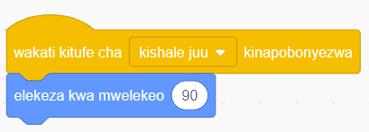

Kazi ya kufanya namba 15: Kuunda mchezo wa kumfanya ‘Sprite’ (Cat) aende pande nne
Hatua zifuatazo zitakuongoza kuunda mchezo wa kuifanya ‘Sprite’ aende juu, chini, kushoto na kulia huku akitoa sauti.
Hatua
Bofya menyu ya bloku za ‘Matukio’.
Buruta na dondosha bloku ya ‘wakati kitufe cha kinapobonyezwa’ kwenye eneo la kuandikia. Kisha chagua ‘kishale juu’.
Bofya menyu ya bloku za ‘Mwendo’.
Buruta na dondosha bloku ya ‘elekeza kwa mwelekeo’ kwenye eneo la kuandikia. Kisha iunge bloku hiyo kwenye bloku ya ‘wakati kitufe cha kinapobonyezwa’ kama inavyoonekana katika Kielelezo namba 46.

Kielelezo namba 46: Bloku ya ‘elekeza kwa mwelekeo’ ikiwa imeungwa kwenye bloku ya ‘wakati kitufe kinapobonyezwa’
Badilisha nyuzi katika bloku ya ‘elekeza kwa mwelekeo’ kutoka 90 kwenda 0 kama inavyoonekana katika Kielelezo namba 47. Hii itamfanya ‘Sprite’ aende juu ikiwa ‘kishale juu’ kitabonyezwa.